사양별 지원 로컬 ai 및 엔진 (26년 11월 25일 현재)
1편 : (12~16gb vram / 64gb dram 필요) 대형 로컬 ai가 일반 게이밍 pc에서도 구동되기 시작함. https://www.dogdrip.net/728784997
2편 : (12~16gb vram / 64gb dram 필요) Strata 놈들은 763B 짜리 초거대 지능 DeepSeek-V4.1-Flash-1017도 구동시키기 시작했음. https://www.dogdrip.net/732031133
3편 (8gb vram / 32~64gb dram 필요) 이제 8GB VRAM 그래픽카드로도 거대 로컬 AI를 작동시킬 수 있게 됨. https://www.dogdrip.net/733597102
4편 (8gb vram / 32~64gb dram 필요) 아까 8GB로 180B 로컬 AI 실험후 가지고 오겠다는 결과값. https://www.dogdrip.net/733669901
5편 젠슨황의 축출에 따른 로컬 ai 단종 설. https://www.dogdrip.net/734761542
6편 8gb vram / 32gb dram 으로 중형 로컬 ai를 돌려보자. https://www.dogdrip.net/734775177
7편 4gb vram / 16gb dram 으로 중소형 로컬 ai를 돌려보자. https://www.dogdrip.net/735059197
8편 음란 마귀들을 위한 로컬 ai [uncensored] https://www.dogdrip.net/735106755
9편 용량별 추천 로컬 ai 정리. https://www.dogdrip.net/735264117
========================================
맨 위 요약
1. 기본형 (12gb vram, 48gb dram) strata =가장 범용성있고, 딸깍 누르는 것 만으로 사용이 쉬운 엔진=
2. 존나 큰거 써보고 싶다. project-maya =초대형ai용 엔진=(초고속, 대용량 m2 필요)
3. 나는 50 시리즈 gpu를 쓴다. basalt =50 계열 전용 엔진=(50계열 gpu 필요)
4. 나는 Qwen3.8-27B 만 쓰겠다! yasakani =Qwen3.8-27B 전용엔진=(엔비디아 계열 30계열 이상 16vram 이상 gpu 필요)
5. 8gb vram 밖에 없지만 어떻게든 Qwen3.8-Flash-Next를 사용해 보고 싶어! sync-strata (8+vram, 24dram 필요, 전용 양자화 모델)
6. 나는 8gb vram에 32gb dram을 가지고 있다. PolyStrata (8+gb vram, 32+gb dram) 해당 사양에서 가장 성능과 범용성이 좋음.
7. 나는 vram이 4~6gb 밖에 없어! 4gbVramStrata (4~6gb, 16~32gb dram)
8. 나는 4gb도 없어! 정말 적은 vram 으로도 고성능 llm을 그것도 아무것도 설치 안하고 써보고 싶다. Ternary Bonsai 2
9. 나는 애플임. TensorFold
========================================
1. 계층별 메모리를 선도하고 있는 strata
https://github.com/niko1221/strata
strata는 많은 gpu와 거의 모든 운영체계를 지원하기 때문에 각 사양에 딱 맞는 설정을 제공해주고 있지는 못함.
하지만 어째든 대부분의 os와 많은 gpu를 지원하니 기본형으로 두면 됨.
윈도우, 리눅스, 맥을 모두 지원하고, 많은 gpu를 지원해.
업데이트도 잘해주고, 설치나 업그레이드도 딸깍 한번에 되니깐 굉장히 편함.
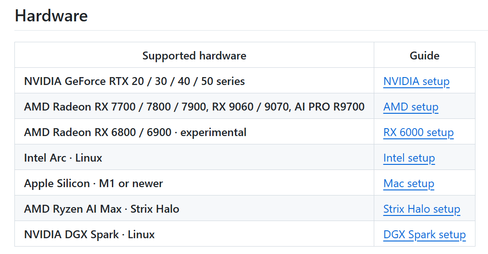
단 8gb 이상 vram을 가진 gpu로 쓸 수 있다고 주장하지만,
실제 측정해본 결과 strata는 vram 12gb 이상이 되어야 실사용이 가능하고, 그 이하는 그냥 아무리 느려도 사용해본다. 에 그침.
지원 ai는 예전에 지원하던 초대형 모델인 DeepSeek-V4.1-Flash-1017은 이제 지원을 종료했고(이미 받아놓은 경우에는 사용 가능)
기본형인 Qwen3.8-Flash-Next / Qwen3.6-35B-A3B 이외에 2가지를 추가했어.
그리고 지난번 측정 때 8gb 로 Qwen3.8-Flash-Next는 구동되고,
Qwen3.6-35B-A3B는 구동 되지 않던 걸 수정해서 Qwen3.6-35B-A3B도 아주 아주 느리지만 간신히 구동이 되게 되었음.
Tencent Hy4-Flash 텐센트의 최신 모델(26년 11월 공개)로 220b 중 12b가 활성 전문가고, 1m 컨텍스트를 지원해.
8gb 그래픽 카드 부터 가능하다고 주장하지만 글쎄...
Inkling 2 Mini 역시 Thinking Machines Lab의 최신 모델(26년 11월 공개)로 26.4b 중 3.4b가 활성 전문가고, 1m 컨텍스트를 지원해.
이건 24gb 그래픽카드 부터 되지만 자기들은 4gb 그래픽카드 부터 되게 개량을 했다고 함.
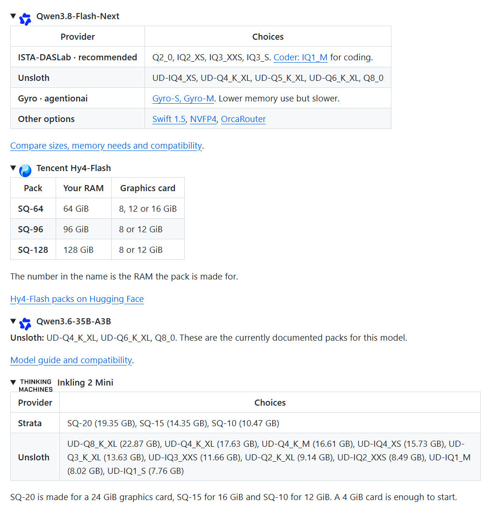
하지만 4gb vram 으로도 가능하다고 한 Inkling 2 Mini sq-10도 8gb 그래픽카드로 실사용 했을 때 11톡 정도 나왔으니까
4gb로는 가동만 된다 뿐이지 거의 사용 불가능 수준일거야.
==========================================
2. 초거대 로컬 모델들을 어떻게든 돌려보자.
https://github.com/mw00/project-maya
project-maya는 거대모델들을 느리더라도 작동시켜 보자. 라는 방식이야.
윈도우랑 리눅스, 실험적으로 맥os를 지원해.
여러 gpu 도 지원 하지만, 마야는 초대형 모델들을 사용하기 위해서 초고속 대용량 ssd를 강력하게 요구함.
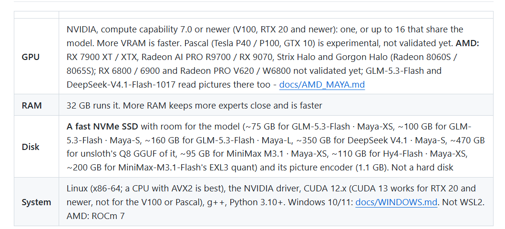
초대형 로컬 ai를 vram이나 dram 에 상주 시킬 수 없는 사람들을 위해서 만들어진 거니까 당연한거겠지.
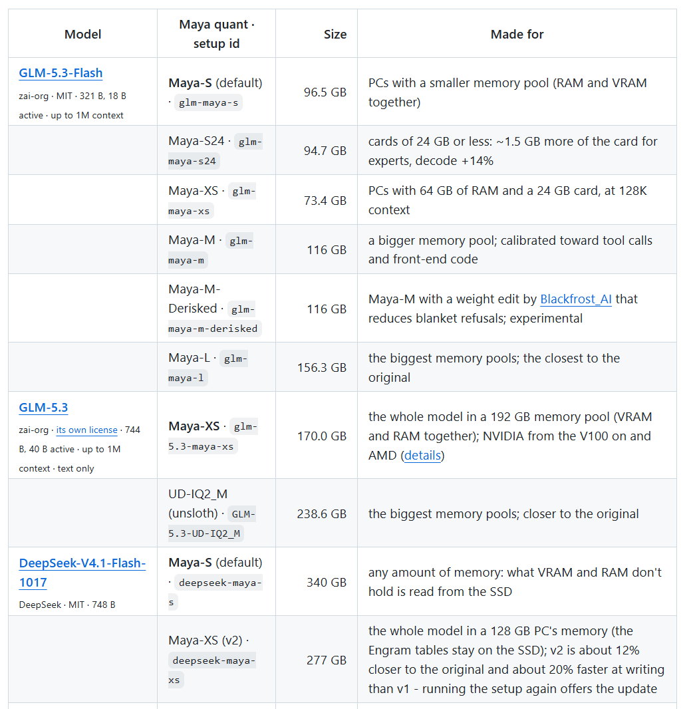
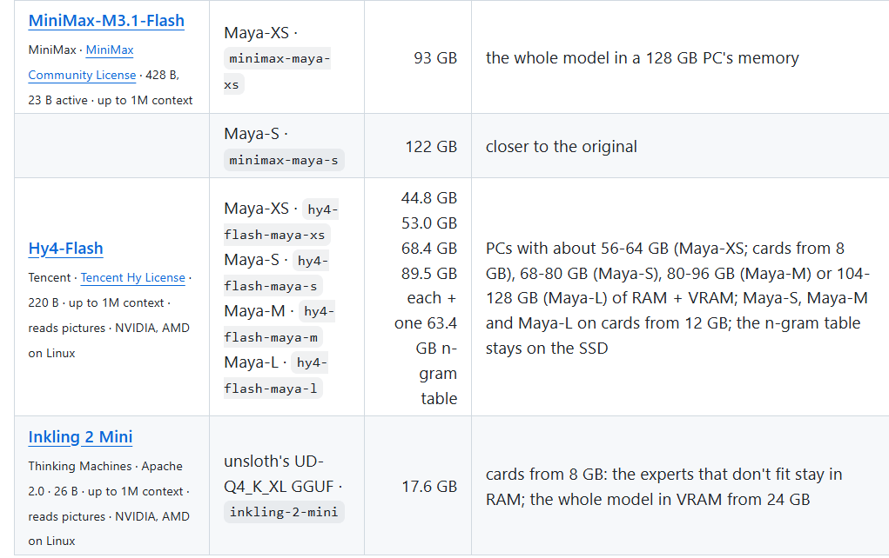
물론 더 많은 vram이나 dram를 가진 사람의 장비에서는 더 빨라짐
3. 나는 50 시리즈 그래픽카드를 가지고 있다. basalt
50시리즈 블랙웰, 보다 정확하게는 sm_120를 집중적으로 지원하는 엔진인 basalt
메인 gpu 이외에 vram 제공용 보조 gpu는 40 시리즈 정도까지는 가능함.
https://github.com/jesdga95/basalt
블랙웰 전용 엔진을 사용해서 strata 보다 훨씬 빠르다! 를 주장함.
일반적으로 strata 보다 빠른건 맞는거 같은데, 모든 경우에 빠르지는 않은거 같고, 비슷하게 측정될 때도 있음.
현재 실험적으로 Linux Arm64이랑 sm_121 계열인df DGX Spark/GB10도 추가 중
지원 모델은 strata가 지원하는 3종에 추가로 지원이 종료된 DeepSeek-V4.1-Flash-1017도 유지되고 있음.
그리고 qwen-3.8-27b 도 지원중.
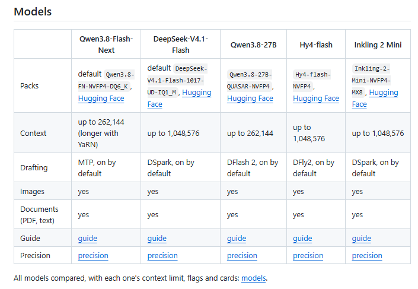
4. 엔비디아 gpu로 Qwen3.8-27B 만 쓰겠다! yasakani
yasakani는 Qwen3.8-27B만 강력하게 사용하기 위한 전용엔진임.
https://github.com/yasakani-dev/yasakani
전용엔진인 만큼 Qwen3.8-27B 하나를 아주 빠르고 성능 좋게 사용할 수 있는 방식임.
gpu도 많이 가려서
5090을 기준으로 설계 되었고, 40/50 시리즈에서 16gb 이상, 30시리즈에서는 3090/3090ti만 사용가능함.
윈도우 11로만 쓸 수 있는데, 일부 개발자는 리눅스 빌드를 만들어서 쓰기도 함.
현재 Inkling-2 Mini 도 실험적으로 추가 지원을 하고 있음.
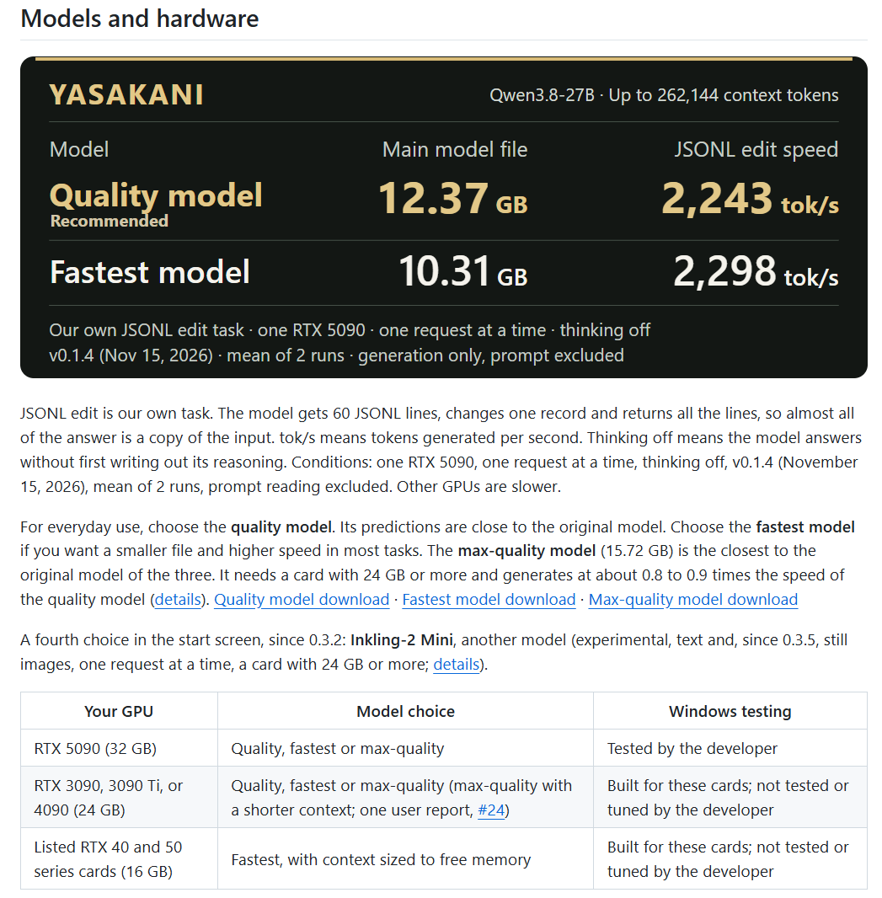
5. 8gb vram 밖에 없지만 어떻게든 Qwen3.8-Flash-Next를 사용해 보고 싶어! sync-strata
Qwen3.8-Flash-Next 모델만 직접 쓰는 전용 엔진임.
https://github.com/hiruhiru2005/sync-strata
윈도우 10/11, 리눅스 그리고 30/40 계열 8gb 이상 gpu를 기준으로 만들어진 전용 엔진.
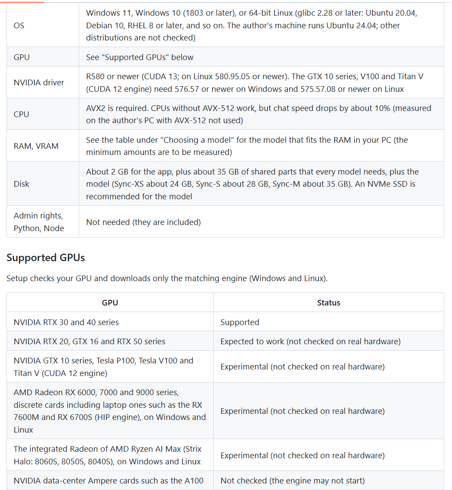
vram 조건이 타이트 한 만큼,
범용 모델이 아니라 전용 양자화 모델을 사용하고,
이 전용 양자화 모델은 저스펙 장비로도 사용하기 위해서 일부 전문가 그룹을 생략했음.
그러니까 같은 Qwen3.8-Flash-Next 이라고 동일 성능은 아니라는거.
속도가 더 빠르게 나오지만, 성능은 떨어짐.
dram에 맞춰서 어떤 양자화 모델을 사용해야 되는지도 정해져 있음.
8gb vram에 24gb dram 으로 Qwen3.8-Flash-Next의 가동이 가능하다는건 굉장한건데, 실측은 안해봤음.
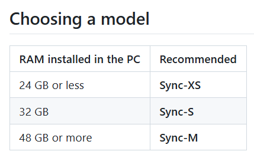
6. 나는 8gb vram에 32gb dram을 가지고 있다. PolyStrata
https://github.com/simplexai-labs/PolyStrata
위에서 Strata 로는 Qwen3.6-35B-A3B가 가동이 된다 수준이지 거의 실사용 불가능 수준이었지만
PolyStrata 로는 긴 컨텍스트로 40톡이 찍혀서 실사용에 편할 수준임.
지원하는 ai도 많아서 좋긴 한데, 지난번에 말했다 시피 엔진만 집중 개발하는 쪽이라서
로컬ai로 사용하려면 직접 업데이트를 하고, 오픈 코드 등으로 별도 api 를 사용해야 하는 불편이 있음.
그나마 기존에는 형식적으로 테스트해볼 수 있는 간단한 대화창이라도 있었는데 최신 업데이트에서는 그 대화창까지 없앴음.
엔진 개발에만 집중하겠다는 거겠지.
그런데 저 성능에서는 제일 성능과 속도가 나오는 엔진임.
아래는 제작진이 제시하는 짧은 대화로 최적화해서 나온 속도.
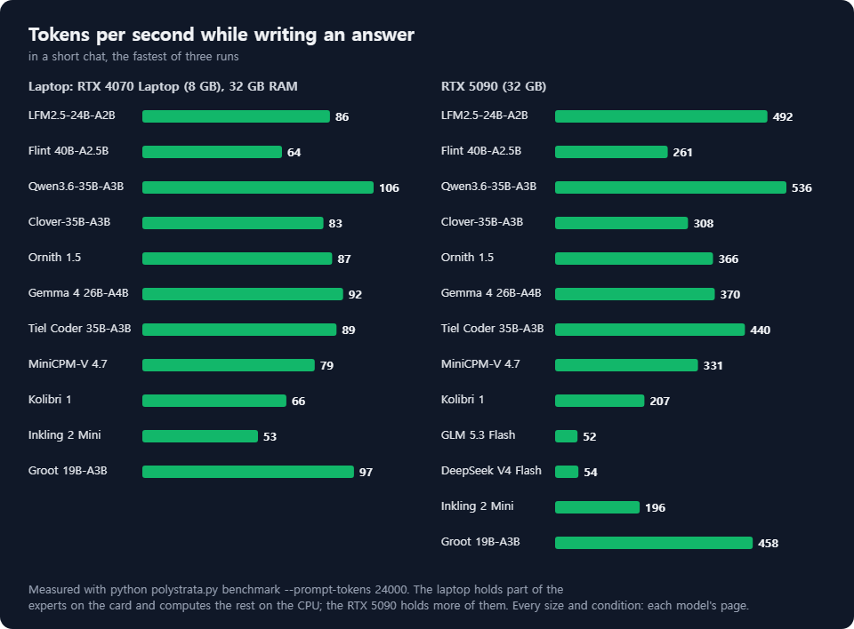
위에서 Strata에서는 4gb 용인 sq-10도 11톡 수준이라고 말했던 Inkling 2 Mini도
PolyStrata에서는 4비트 양자화 기준으로도 전문가 점유량 vram 4.5gb, dram 27gb만 먹으면서 30톡 수준의 준수한 성능을 보여줌.
(전문가 점유량은 vram 전체 점유량은 아니니까 여전히 8gb vram이 필요함)
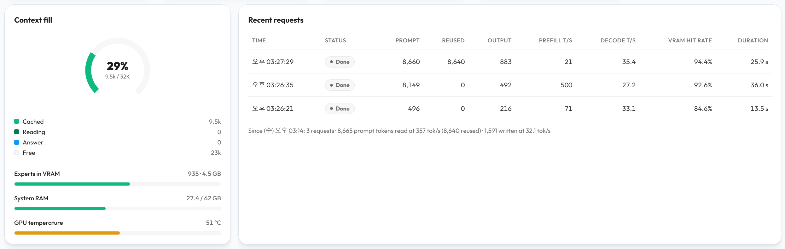
7. 나는 vram이 4~6gb 밖에 없어! 4gbVramStrata
https://github.com/RandoTeam/4gbVramStrata
Strata도 12gb는 필요하다!
PolyStrata도 8gb는 필요하다!
하지만 나는 4~6gb 밖에 없다. 라는 사람들을 위해서 4gb에 최적화 되고, 6gb까지 지원하는 엔진.
(그 이상도 못쓰는건 아닌데, 그 이상은 위의 다른 엔진들을 쓰는게 더 좋음)
4gb vram에 32gb dram에 32k 컨텍스트로 나온 성능.
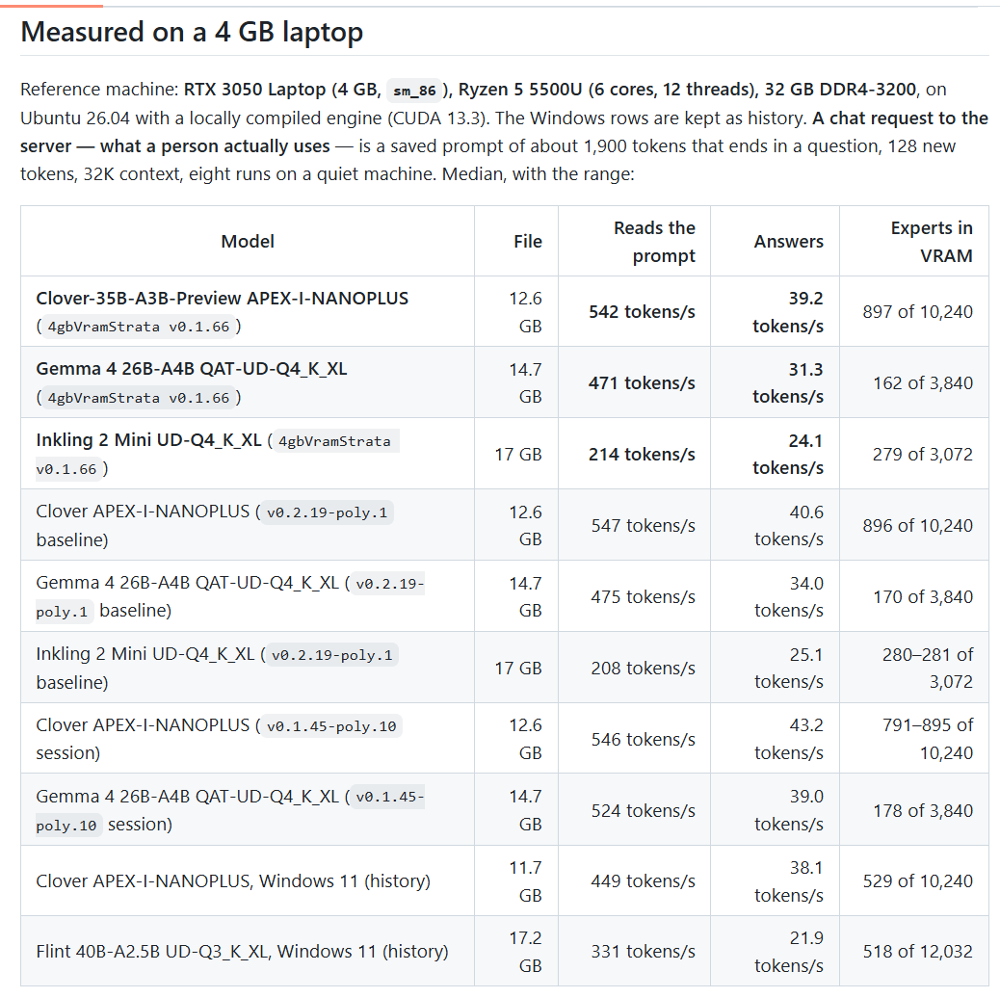
4gb vram에 16gb dram 으로는 Clover-35B-A3B-Preview APEX-I-NANOPLUS, LFM2.5-24B-A2B UD-Q3_K_XL 정도가 가능할 거임.
8. 나는 4gb도 안된다. 정말 적은 vram 으로도 로컬 llm을 그것도 아무것도 설치 안하고 써보고 싶다. Ternary Bonsai 2
https://prismml-eng.github.io/Talk/
prismml엔진은 설치 안해도 홈페이지에서 vram에 모델 올려서 사용할 수 있으니까 어느정도 성능인지 직접 써봐.
2b 모델은 794mb 면 됨.
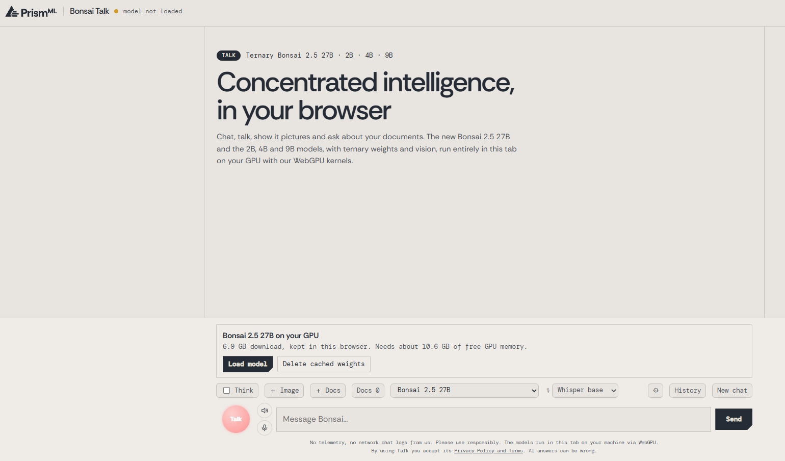
그래도 직접 설치를 해서 사용해보는게 더 성능이나 편의성 면에서 좋겠지.
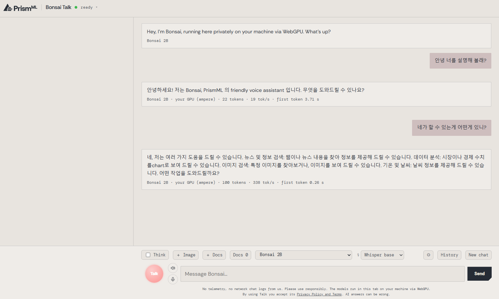
2b 모델을 올려서 웹으로 써봤는데 2b긴 해도 338톡이라는 속도가 나옴.
9. 나는 애플. TensorFold
https://github.com/ashhart/TensorFold
맥os를 기본 타겟으로 만든 엔진인데,
굳이 윈도우나 리눅스로 gpu를 가지고 사용하려면 추가 빌드를 써서 사용 할 수는 있음.
하지만 위의 다른 것들을 쓰는게 나을 듯.
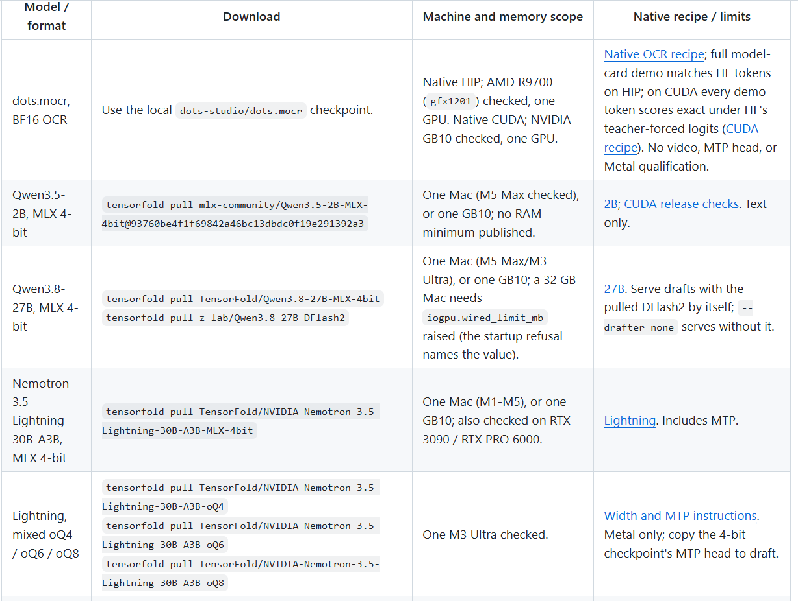
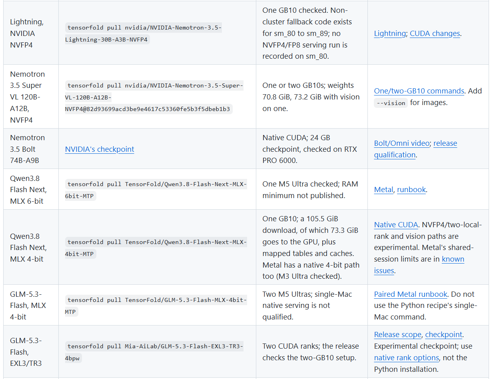
사람들이 잘 안가는 길은 다 이유가 있더라. ㅠ.ㅠ